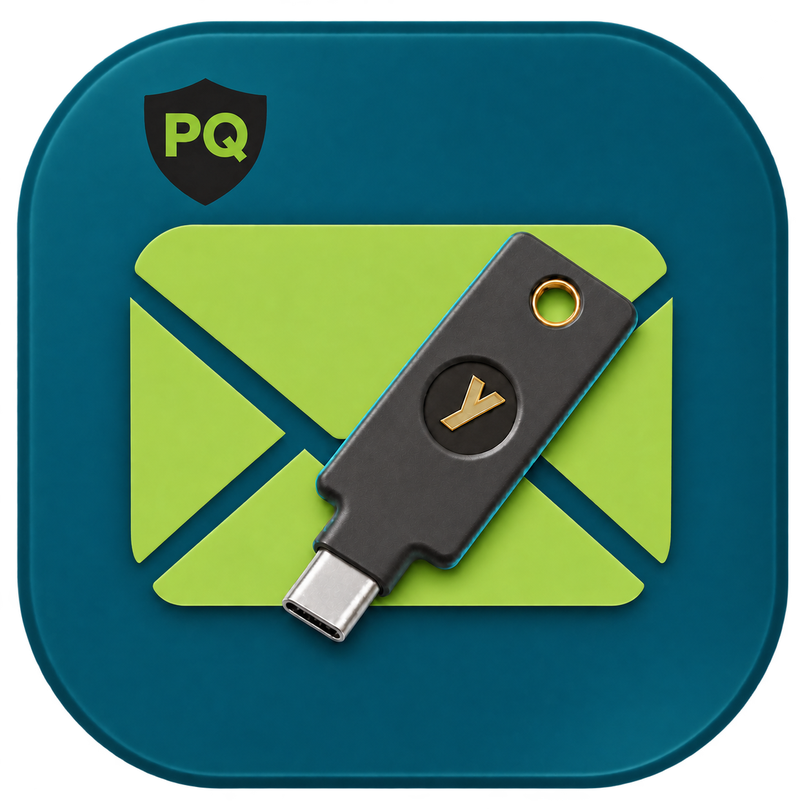

PQ Mail
Experimental email software for post-quantum S/MIME and hybrid OpenPGP signing and encryption, with software identities and supported YubiKeys.
PQ Mail lets you create and select identities, sign and optionally encrypt outgoing email, decrypt and verify incoming messages, and manage recipient certificates and trusted fingerprints.
Mail on your device
The desktop app supports Gmail through Google’s API, IMAP/SMTP for other hosts, and local email files. Gmail sign-in requests read-only access to browse and open messages and send access for messages you choose to send. It does not request permission to delete messages or change your mailbox. Inbox pages are read on demand without a disk cache of Gmail message bodies.
Google authorization is optional. The project does not operate a mailbox relay. Refresh tokens are saved in macOS Keychain or Windows Credential Manager. The shared Google registration is in Production, so named test-user registration is not required. Until Google verification is complete, the unverified-app warning and Google user limits apply.
Keys and platforms
Use password-protected software PKCS#12 identities or supported PQ-capable YubiKeys for pure post-quantum and composite profiles. The desktop project targets macOS and Windows; an Android preview supports software identities and YubiKey operations over USB and NFC. A SwiftUI iOS preview uses OpenSSL and YubiKit for local S/MIME/OpenPGP files; it has no mail account sending or attachments yet. Google OAuth is currently a desktop feature.
OpenPGP alternative
All four platforms support the draft Level 3 hybrid profile: ML-DSA-65 + ECDSA P-384 signing and ML-KEM-768 + ECDH P-384 encryption. Exchange separate OpenPGP public identities as .asc files. This preview supports plain-text PGP/MIME; attachments and other key profiles remain S/MIME-only. Java/OpenSSL exchange and simulated hardware tests pass; physical YubiKey OpenPGP testing remains pending.
OpenPGP guide · Android guide · iOS guide
This is development and interoperability-testing software, including evolving cryptographic profiles and beta hardware support.
Source code, build instructions and project documentation →
Privacy and terms
Maintained by John Bradley. Contact: ve7jtb@gmail.com.